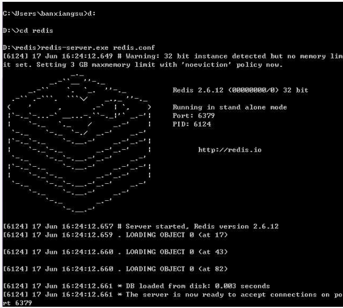
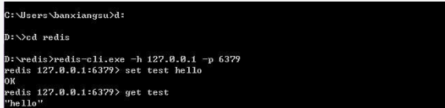
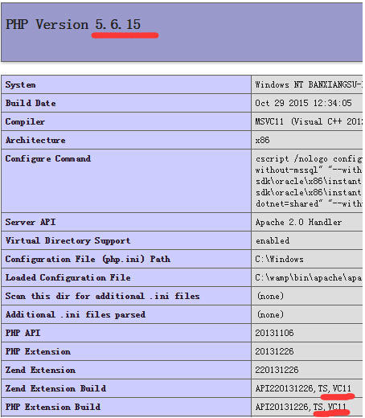
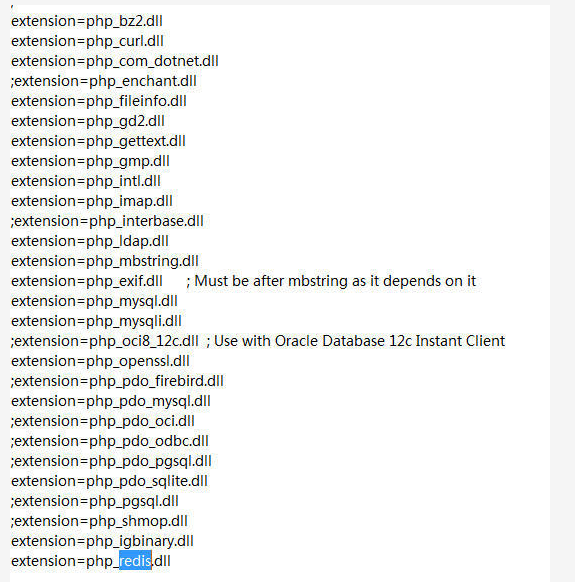
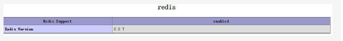
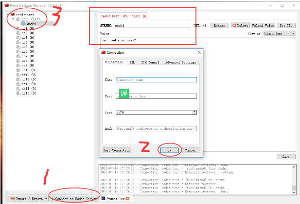

下载window-redis
window-redis下载
php_redis_windows
安装
1 | 解压下载包得到以下文件： |
启动redis 开启cmd窗口，输入命令，成功如下图：
d:
cd redis
redis-server.exe redis.conf

另起新cmd窗口（不能关闭之前的cmd窗口，运行redis必须一直开着窗口）输入命令：
redis-cli.exe -h 127.0.0.1 -p 6379
set key1 HelloWorld
get key1
如果输出：HelloWorld 表示redis已经安装成功了

安装php-redis扩展
运行phpinfo()查看以下内容：PHP版本号、TS or NTS、VC版本

下载对应的php-redis扩展文件，下载地址：php-redis扩展下载
将下载的php_igbinary.dll（可能没有）、php_redis.dll放在php扩展目录中（ext），并修改配置文件php.ini，在文件相应位置添加
extension=php_igbinary.dll
extension=php_redis.dll
如下图

重新启动服务，查看phpinfo(),找到以下内容表示成功
redis Redis Support enabled
Redis Version 2.2.3

php简单测试
1 | <? |
redis管理工具
下载地址：redis管理工具下载
